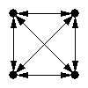
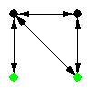
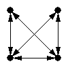

Size-4 Network Motifs in 'fs_0_ps_0.15_fd_1_pd_0.15_rep_1.txt' |
Page 1 |
Generated with
FANMOD - FAst Network MOtif Detection. Written by Sebastian Wernicke and Florian Rasche
| ID |
Adj |
Frequency
[Original] |
Mean-Freq
[Random] |
Standard-Dev
[Random] |
Z-Score |
p-Value |
| 31710 |
 |
3.884% |
0.36473% |
0.00021131 |
166.54 |
0 |
| 31710 |
 |
0.81313% |
0.038631% |
5.4678e-005 |
141.65 |
0 |
| 4382 |
 |
17.59% |
11.097% |
0.00055073 |
117.89 |
0 |
| 13278 |
 |
7.7893% |
1.8293% |
0.00062361 |
95.573 |
0 |
| 4958 |
 |
16.941% |
11.251% |
0.00098395 |
57.827 |
0 |
| 13278 |
 |
2.6296% |
1.26% |
0.00047331 |
28.936 |
0 |
| 4958 |
 |
2.561% |
0.91821% |
0.00061551 |
26.69 |
0 |
| 4958 |
 |
4.677% |
2.106% |
0.00099178 |
25.924 |
0 |
| 13278 |
 |
0.95727% |
0.69391% |
0.00013481 |
19.536 |
0 |
| 4958 |
 |
1.4066% |
1.1771% |
0.00037162 |
6.1765 |
0.005 |
| 4958 |
 |
6.5786% |
6.0115% |
0.0010382 |
5.462 |
0 |
Previous
Index
Next
Generated with
FANMOD - FAst Network MOtif Detection.
Written by Sebastian Wernicke and Florian Rasche
|